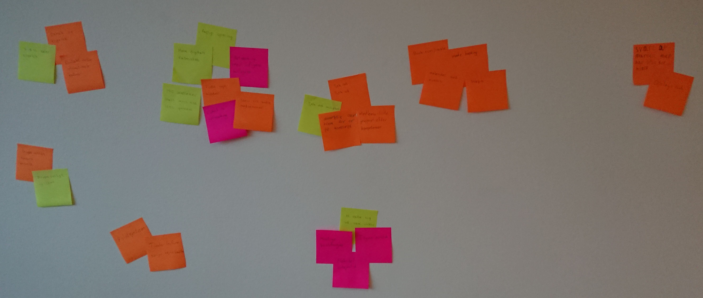
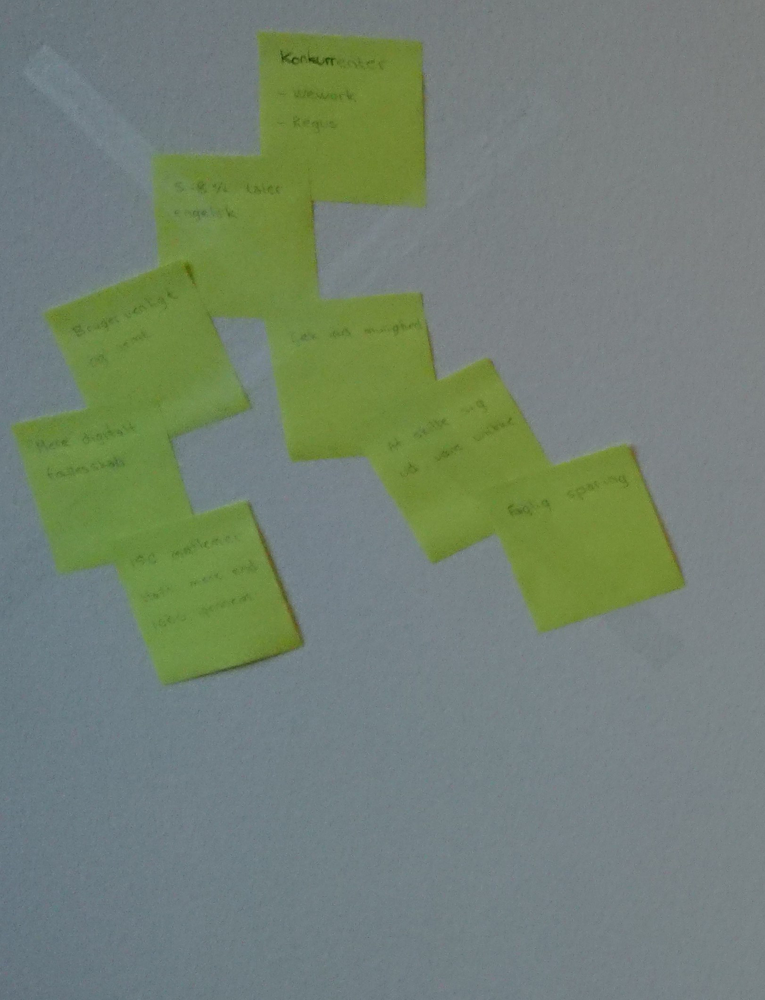
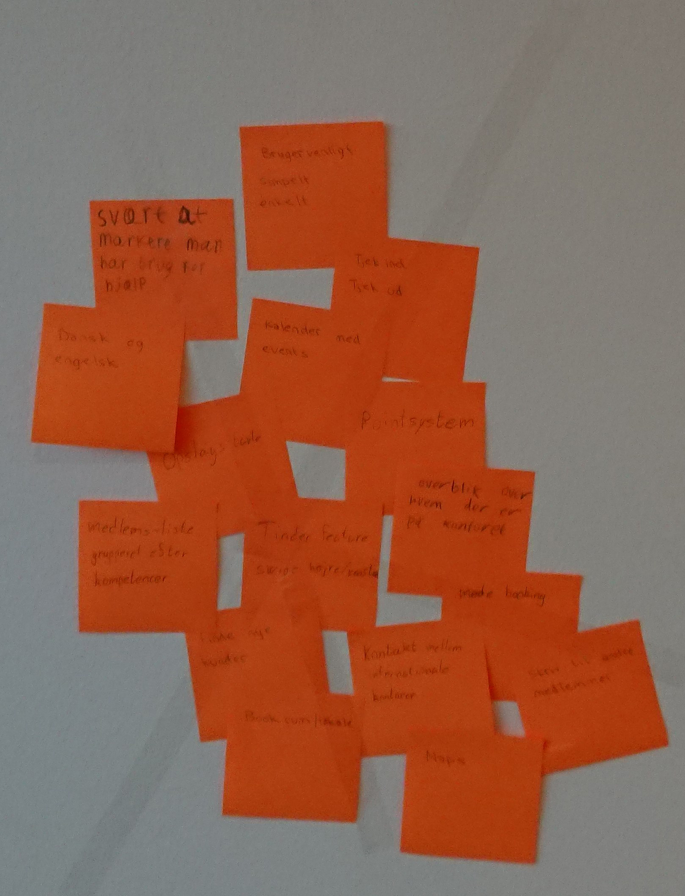
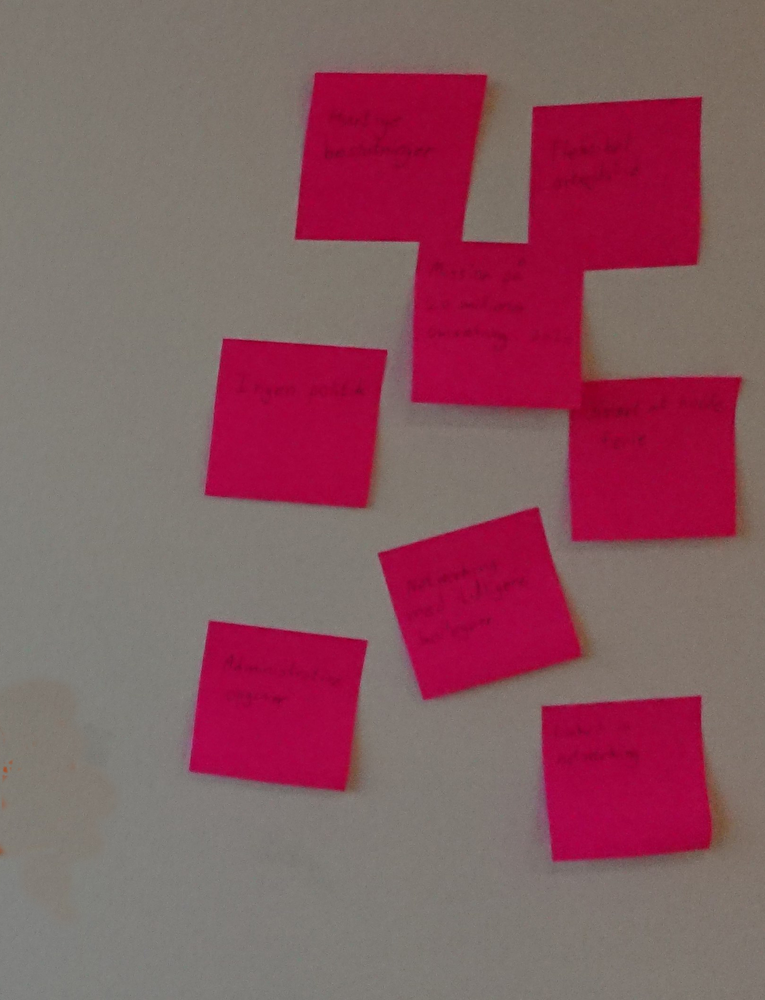
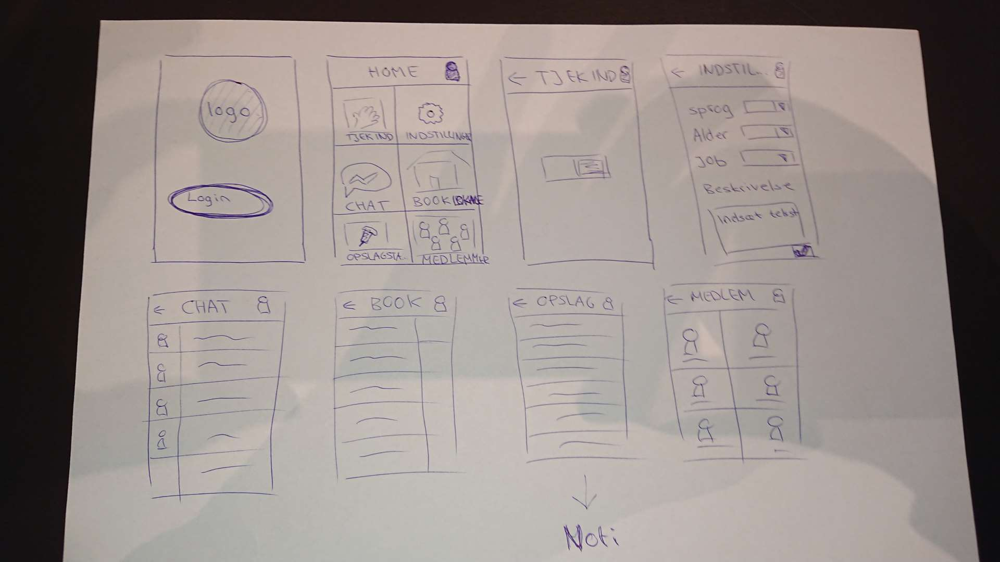
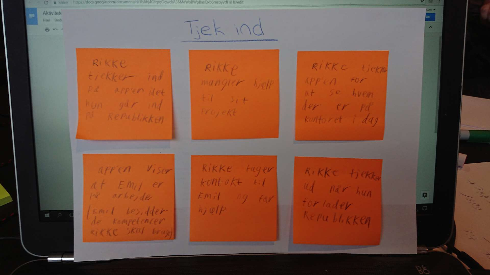
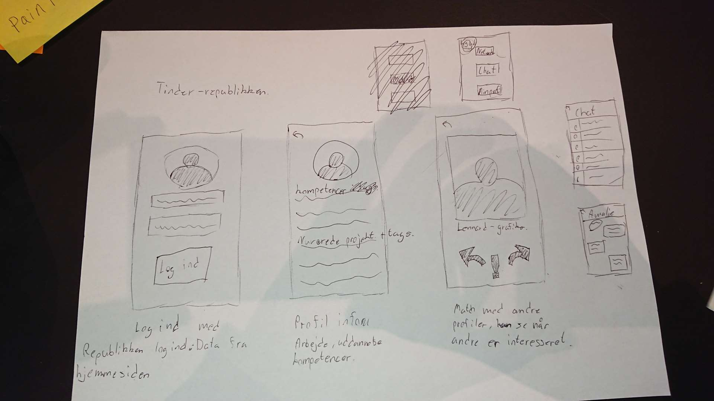
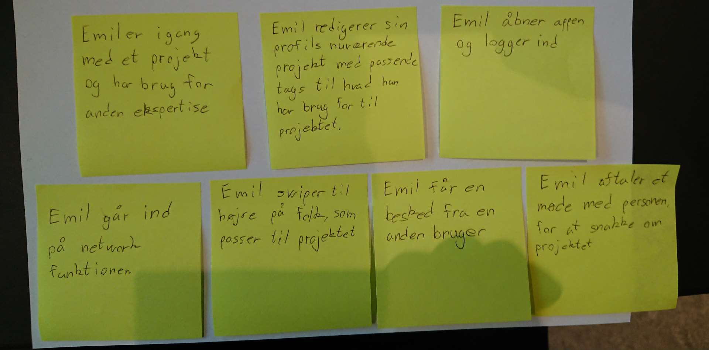
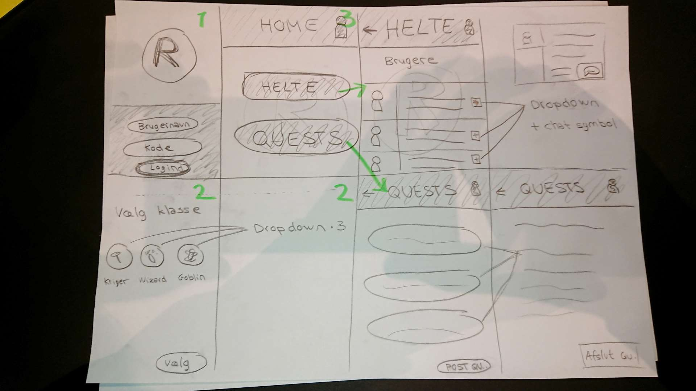

Indledning
På denne side dokumentere og gennemgår vi vores proces under idégenerereingen af mindst 3 app-idéer til kontorfællesskabet Republikken. Vi gennemgår i øvrigt også vores overvejelser og argumentation for den idé, som vi har valgt at gå videre med.
Vores Burn-down-chart giver et hurtigt overblik over, hvor meget arbejde vi har lavet de enkelte dage.
OPS: Brug drop-down menuen i toppen til at vise de forskellige sektioner.
Trello-board
Følg med i hvad vi laver de enkelte dage, eller se hvad vi har lavet.
Scrum videoer
Et lille link til en side med videoer. Husk lige at find slikket frem – snup en kop varm kaffe :-)
Burn-down chart
#burndownchart - (Kommer på til sidst)
Experience Map
Vores esperience map består af små noter fra virksomhedsbesøg (gul), vores egne tanker til problemstillingen som ønskes løst (orange), og fra vores interview med Lauras far (lysserød).
Vi beklager den ringe kvalitet på postit-billederne.
- 
- 
- 
Interview
Her har vi valgt at inkludere et interview med en selvstændig erhvervsdrivende, som ikke har forbindelse til Republikken. Det kan være med til, at give os et indblik i de forskellige problemstillinge, som de selvstændige kan stå overfor i forbindelse med deres virksomhed.
- Hvilken virksomhed har du?
- Skønheds/kosmetik forhandler.
- Fokus på det Nordiske marked.
- Fokus på mande produkter.
- Startede som Brand ejer af det danske mærke BarberiansCph.
- Distributører for andre skønhedsprodukter.
- Hvor længe har du været selvstændig?
- Halvandet år
- Hvad er fordele og ulemper ved at være selvstændig?
- Fordele: Ingen politik, hurtige beslutninger, fleksibel arbejdstid.
- Ulemper: Administrative opgaver, svært at holde ferie, ikke altid på kontoret.
- Ingen til at dække for en.
- Hvad er din uddannelsesbaggrund?
- Cand Merc
- Er networking vigtigt når man er selvstændig?
- Ja for man har ikke kollegaer.
- Man har brug for faglig sparring.
- Hvordan networker man som selvstændig?
- Opsøgning hos tidligere kollegaer og venner.
- Er networking vigtigt når man er selvstændig?
- Ja for man har ikke kollegaer.
- Man har brug for faglig sparring.
- Hvad er dine ambitioner med virksomheden, hvilken størrelse skal den opnå?
- Omsætning for 20 millioner i år 2020
Idé 1 – Check Ind
skitse
Indledende skitse over idéen.
Storyboard
Vores storyboard giver et bud på en brugssituation for vores app.
Test af Tjek Ind Appen (Idé 1)
Beklager at videoen er på siden. Du bliver nok nødt til at sætte din skærm på højkant :-D
Dataindsamling
- 00.02: Lidt forvirring, brugeren skaber overblik over menuen.
Indsigt: Testpersonen er forvirret over interfacen, specifikt over login knappen.
Losning: interface redesignes.
- 00.04: Brugeren logger ind.
- 00.24: Lidt forvirring over 2 “Tjek Ind” knapper i træk, brugeren tror han tjekker ind to gange
Indsigt: Testpersonen er forvirret over interfacen, specifikt over at tjek ind knappen kommer 2 gange, forstår ikke at det første var en del af menuen og den anden er den som tjekker en ind.
Løsning: interface redesignes.
- 00.42: Vi kommer til at forklare hvad plus knapperne betyder i højre side
- 00.48: Brugeren trykker på et af plusserne, som vi lige forklarede.
- 00.54: Brugeren forstår at han kan læse information om andre medlemmer.
- 01.16: Brugeren roser “Det var super, meget simpelt”.
- 01.26: Brugeren roser igen “Lækkert, det var meget simpelt”.
- 01.30: Brugeren spørg ind til plusset og minusset under medlemmer
Indsigt: Testpersonen er forvirret over plus knapperne ude i højre hjørne og minusserne som kommer efter man har trykket på plusset.
Losning: interface redesignes, marker at det er en knap til en dropdown menu.
- 01.42: Brugeren forstår
Ide Grundlag
- (Aktivitet)
- (Features)
- Log ind
- Brugernavn tekstfelt
- Password tekstfelt
- Log ind knap
- Home
- Tjek ind / tjek ud
- Medlemsliste
- Min profil
- Tjek ind
- Tjek ind knap
- Tjek ud
- Tjek ud knap
- Medlemsliste
- Medlemsprofiler
- Min profil
- Navn
- Alder
- Sprog
- Beskrivlse
Konceptvalidering
Her vil vi forsøge at vurdere, hvor vidt vores app vil være realiserbar. Dvs. Vil man kunne udvikle appen indenfor, blandt andet, budget, og en overskuelig tidsremme.
Målgruppe
Målgruppen er, først og fremmest, de selvstændige, som arbejder i kontorfællesskabet. Senere kan man eventuelt skalere appen op, så andre kontorfællesskaber også kan få glæde af den. Republikken nævnte selv, at det på sigt kunne være et mål, at åbne for at andre også kunne anvende appen.
Forstår målgruppen vores løsning?
Overordnet set var feedback på low-fi testen meget positiv. Der var dog lidt forvirring i starten, hvilket nok kan forventes for de fleste apps.
Hvilken værdi vil løsningen give virksomheden?
Appen skulle gerne gøre det nemmere at tjekke ind for medlemmer, i det den vil erstatte deres nuværende papir-baseret tjek-ind system. Desuden vil den også hjælpe virksomheden med, at styrke den kontakt og udveksling, som allerede foregår imellem de selvstændige i Republikken.
Er appen realiserbar?
Der er umiddelbart ingen hindringer for, at udviklingen af Appen skulle lade sig gøre. Virksomheden har fremsat et relativt stort budget til udvikling af en beta version af appen (50,000 kr), og endnu større for en første, fungerende, version (100,000 kr).
Hvis beta bliver lavet færdig af eksterne udviklere, så vil man sandsynligvis selv kunne arbejde videre på projektet internt. Dette forudsætter dog, at der er folk som er interesseret i projektet. Her kunne man også fokusere på en up-scaled version, der eventuelt kan sælges til andre kontorfællesskaber for et beskedent beløb. Ofte kan brugerbetaling på en app dog være en hindring i sig selv, så en gratis version vil nok, under alle omstændigheder, være at foretrække.
Har andre allerede realiseret en tilsvarende løsning?
Vi har i gruppen snakket om, at Ragus og WeWork bruger nogle apps internt, som andre kontorfællesskaber også kan bruge, som har nogle af de samme funktioner som vores check-in app.
Idé 2 – Tinder
skitse
Indledende skitse over idéen.
Storyboard
Vores storyboard giver et bud på en brugssituation for vores app.
Test af Tinder Appen (Idé 2)
Ide Grundlag
Idéen med denne app er at man nemt og hurtigt kan browse iggennem brugerne af republikken og finde er, som man kan søge hjælp eller råd hos.
- (Aktivitet)
- (Features)
- Log ind
- Brugernavn tekstfelt
- Password tekstfelt
- Log ind knap
- Home
- Network
- Kontakter
- Min profil
- Log ud
- Min profil
- Mine kompetancer
- Nuværende projekter
- Tags
- Billede
- Tilbage knap
- Kontakter
- Knap til hver profil
- Tilbage knap
- Chat
- Skrive felt
- Meddelelser
- Tilbage knap
- Network
- Swipe yes knap
- Swipe no knap
- Læs mere knap
- Indikator im interesse
- Min profil ikon oppe i højre hjørne
- Tilbage knap
- Læs mere
- Billede
- Kompetancer
- Nuværende Projekt
- Tilbage knap
Konceptvalidering
- Hvem er målgruppen?
- Målgruppen er de selvstændige, der har en plads på Republikken. Ja, løsningen kan nemt skaleres op til andre kontorfællesskaber eller på længere sigt flere selvstændige, som man kan arbejde sammen med.
- Forstår målgruppen vores løsning?
- Som udgangspunkt ja. Brugeren forstod konceptet og appens formål. Der var dog lidt forvirring omkring hvordan man tager kontakt til de personer man så matcher med og om man kunne matche med folk senere, hvis først man havde swipet nej en gang.
- Hvilken værdi vil løsningen give virksomheden?
- Et større fagligt og socialt fællesskab.
- Hvilken værdi giver den målgruppen?
- Gør det nemmere for medlemmerne i Republikken at få kontakt til hinanden, og udnytte hjælp fra andre.
- Kan udviklingen lade sig gøre? Eller er vi afhængige af teknologi, der ikke er moden endnu?
- Forudsat at app’en kan linkes sammen med brugernes allerede eksisterende profiler på Republikken, således at de ikke selv skal bruge tid på at oprette en profil, består app’en i al sin enkelthed af en brugerdatabase med chat funktion samt swipe mulighed.
- Inden for hvilken tidshorisont kan det realiseres?
- Forholdsvis hurtigt, i og med at app’en er ukompliceret.
- Har andre allerede realiseret en tilsvarende løsning?
- Udover swipe funktionen, er løsningen i store træk det samme som Republikken egen brugerdatabase på deres hjemmeside. Derudover benytter ‘indbyggerne’ sig af en facebookgruppe, hvor de kan skrive sammen. Som udgangspunkt kan denne løsning nok ikke erstatte de eksisterende ad hoc løsninger.
Idé 3 – Republikkens Helte
skitse
Indledende skitse over idéen.
Storyboard
Vores storyboard giver et bud på en brugssituation for vores app.
Test af Republikkens Helte (Idé 3)
Beklager at videoen er på siden. Du bliver nok nødt til at sætte din skærm på højkant :-D
Dataindsamling
- 00.30: “Der er jo en blanding af classes og races”
Indsigt: De tre valgmuligheder strider mod konventionelle rpg-normer i og med at to af mulighederne er classes og Goblin er en race.
Løsning: Udbyt Goblin valgmuligheden med en anden klasse som f.eks. alkymist eller skjald.
- 01.18: “Kan jeg trykke på ham?”
Indsigt: Interfacen meddeler ikke tydeligt, hvilke muligheder brugeren nu har. Alternativt er formålet med at finde pågældende person IRL ikke blevet forklaret tydeligt nok forud for testen.
Løsning: Redesign af interfacen, der tydeligere viser, hvordan brugeren ser ud, eller med opfordringer til næste skridt. Eksempelvis: ‘Kig dig omkring på kroen og se om du kan finde Steve.’
- 01.43: “Jeg ved ikke hvordan steve ser ud”
Indsigt: Prototypen har ikke et billede af brugeren, kun en profilbillede placeholder.
Løsning: Profilbilledet kan gøres større, eller der kan tilføjes en expand funktion, så billedet kan gøres større.
- 02.04: Lang pause.
Indsigt: Testpersonen stirrer på prototypen i syv sekunder før han trykker på ‘post quest’
Losning: Måske er der ikke behov for en løsning, men der kan evt. optimeres ved at rykke post quest knappen øverst på siden.
Konklusion på test
Koblingen mellem det digitale og face to face interaktionen fremgår ikke tydeligt i denne test af app’en. Derudover går visse features også tabt, som stavekontrollen eller point uddeling i to af de testede scenarier. Løsninger til disse er at der skal laves rettelser i interfacen og evt. en tilføjelse af en startguide og/eller en ordbog, hvor man kan slå spiltermer op. Derudover kan der tilføjes en navnegenerator, således at de spillere, der har lyst kan leve sig mere ind i spillet.
Ide Grundlag
- (Aktivitet)
- (Features)
- Logind
- Brugernavn
- Password
- Logind knap
- Vælg din helt
- Tre klasser med expand funktion til beskrivelse
- Vælg knap
- Hjem
- Profilbillede og navn i toppen med progressbar, der viser hvor mange xp man er fra næste level
- Min profil
- quests (forum)
- Helte (brugerliste)
- Quests
- Egen quest pinned i toppen
- Quests (expand)
- Accepter quest
- Liste over folk der har accepteret
- Afslut quest (kun questgiver)
- Brugerliste
- Medlemmer (onlineaftr øverst)
- Min profil
- Beskrivelse
- Avatar
- Assisteret i quest-knap
Konceptvalidering
Her vil vi forsøge at vurdere, hvor vidt vores app vil være realiserbar. Dvs. Vil man kunne udvikle appen indenfor, blandt andet, budget, og en overskuelig tidsremme.
Målgruppe
Målgruppen er de selvstændige, der har en plads på Republikken.
Ikke umiddelbart. App’en indeholder et vist element af analogt samspil. Derfor kan app’en som udgangspunkt ikke skaleres op. Der er dog mulighed for at udvide app’en, så spillet kan spilles på andre kontorfællesskaber.
Forstår målgruppen vores løsning?
Som udgangspunkt ja. Testpersonen er dog bekendt med rpg’er og der er derfor en mulighed for at målgruppen ikke forstår hensigten. Der skal, i tilfælde af at app’en udvikles, tilføjes en introduktion af formål, spilleregler og pointsystem.
Hvilken værdi vil løsningen give virksomheden?
App’en skal gerne have den effekt at det motivere ‘Indbyggerne’ på Republikken til at spille og være mere tilbøjelige til at søge råd og vejledning hos hinanden. Dertil er konceptet for app’en meget atypisk for en virksomheds-app og skulle gerne agere som et skørt indspark i en ellers meget forretnings præget hverdag. Derudover kan app’en have den effekt at den er en god icebreaker i en samtale.
Hvilken værdi giver den målgruppen?
App’en skal være sjov at bruge. Det er måske ikke alle der vil tage den til sig til at starte med, men hvis app’en bliver hypet for nye ‘indbyggere’ vil brugen formentlig stige. Derudover kan man via app’en få et indtryk af hvem der er gode/interesserede i at hjælpe i form af hvor højt et level de er på.
Er appen realiserbar?
Udviklingen kan let lade sig gøre. Grundlæggende er det en profildatabase og et forum med et fantasy skin på. Tanken er at republikkens profiler kan linkes til app’en via republikkens interne login således at brugerne ikke skal bruge for lang tid på oprettelse af profil. derudover er det meste af app’ens indhold skabt af brugerne selv.
Har andre allerede realiseret en tilsvarende løsning?
Der er ikke nogle app’s tilknyttet en specifik virksomhed, der indeholder spilelementer på samme måde. Der er apps til andre kontorfællesskaber som Regus og Wework, som indeholder rent praktiske features, som Republikken Helte evt. kunne kopiere således at app’en udvikler sig til mere end bare spillet.
Valg af idé
Benchmark
| Målgruppens størrelse | Målgruppens skalerbarhed | Værdien for virksomheden | Værdien for målgruppen | Realiserbarhed | Konkurrence | Total | |||||||
| Vægtning | Score | Vægtning | Score | Vægtning | Score | Vægtning | Score | Vægtning | Score | Vægtning | Score | ||
| Check Ind | 0,2 | 2 | 0,2 | 1 | 0,8 | 3 | 1 | 2 | 0,6 | 2 | 0,8 | 3 | 8,6 |
| Tinder | 0,2 | 2 | 0,2 | 2 | 0,8 | 1 | 1 | 1 | 0,6 | 2 | 0,8 | 1 | 4,6 |
| Republikkens Helte | 0,2 | 2 | 0,2 | 1 | 0,8 | 2 | 1 | 3 | 0,6 | 2 | 0,8 | 3 | 8,8 |
Argumentation
Vi udførete en benchmarktest, for at vælge hvilken idé vi gik videre med. Her var det Republikkens Helte som vandt testen med en score på 8,8.
Persona
- Navn: Rikke
- Alder: 32 år
- Køn: Kvinde
- Bopæl: Vesterbro i en andelslejlighed
- Beskæftigelse: Freelancer, selvstændig designer og programmør
Beskrivelse:
Rikke har gået igennem mange uddannelser og klaret det med perfekte karaktere, i næsten alt. Efter hendes bachelor i webudvikling, valgte hun at stoppe sit uddannelses ræs, ved at starte sin egen virksomhed, og blive selvstændig. Hun har altid arbejdet meget gruppeorienteret og haft studiejobs i store virksomheder, så det at blive selvstændig og skulle stå på egne ben er en kæmpe omvæltning i hendes liv.
Rikke er en selvstændig karrierekvinde. Altid brudepige, aldrig brud. Men hendes tilværelse ændrer sig da hun skal udføre et job for den arrogante, men charmerende chris. Kan Rikke holde sig professionel, eller sparker kærligheden benene væk under hende.